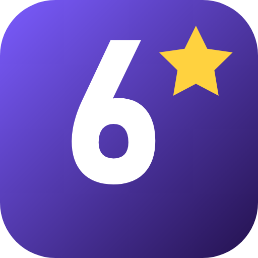

GTA VI stream highlights — credited to the streamers
SixStar Replays publishes short vertical highlight clips (15–60 seconds) from English-language Twitch streams of Grand Theft Auto VI. Every clip names the streamer and links back to their channel.
Latest clips
More on TikTok:
- TikTok clip — streamer KaiCenat
- TikTok clip — streamer DarkViperAU
- TikTok clip — streamer zackrawrr
- TikTok clip — streamer KaiCenat
What we do
Find the moment
Our tool follows public Twitch chat of streams on our allow-list and notices when viewers react strongly — laughter, shock, hype.
Make it watchable
The moment is cut, reframed for phones and subtitled, so it works with the sound off.
A person approves it
Every clip is reviewed by one of us before it is scheduled. Weak or unclear moments are rejected.
Credit, always
Each post names the streamer and links to their Twitch channel, so viewers can find the full stream.
Streamers
Don't want to be clipped, or want a clip removed? Write to roxywild228@gmail.com — we remove your clips and stop clipping your channel, normally within 24 hours. More for streamers →